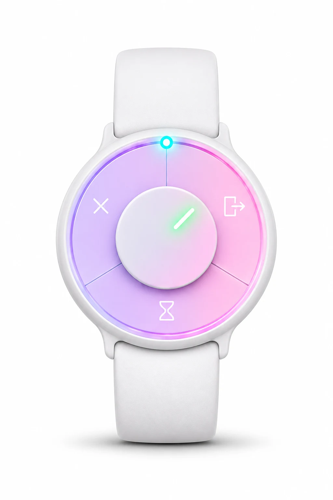

착용자가 시작 · AI가 응답
다이얼 세 구역의 역할
전면은 세 구역으로 나뉘고, 중앙 지시선이 가리키는 구역이 지금의 상태입니다.
- 이탈 희망
나가고 싶을 때 다이얼을 오른쪽 화살표로 돌려 요청합니다.
- 대기 · AI 알림
이탈을 원하지만 주변이 복잡할 때, AI가 주변 사용자를 살피며 최적의 경로를 요청하는 동안 기다립니다.
- 이탈 불가
위험한 상황이라 지금은 이동하면 안 될 때 표시됩니다.